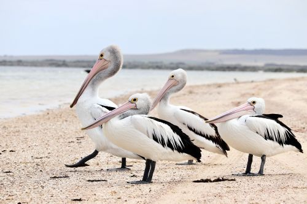
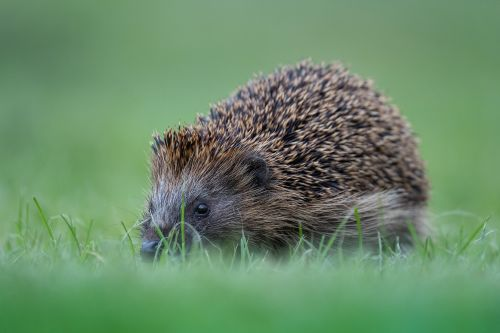
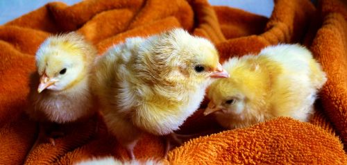
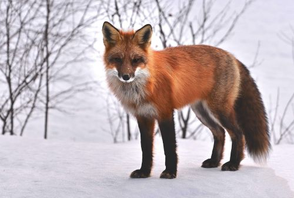
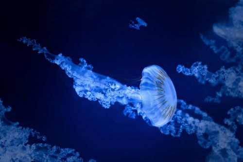
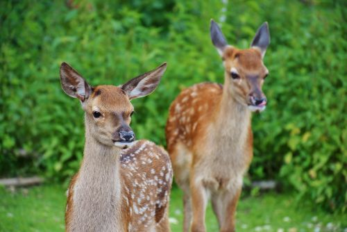
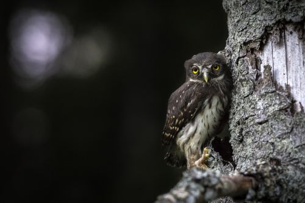
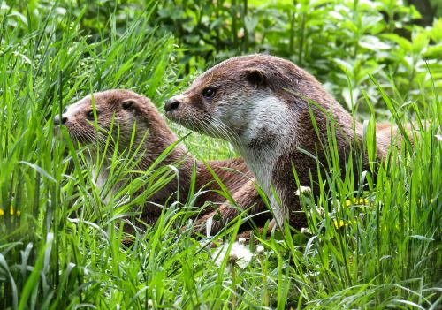
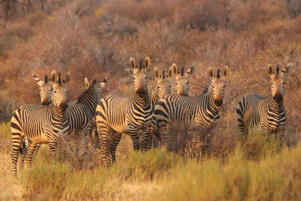
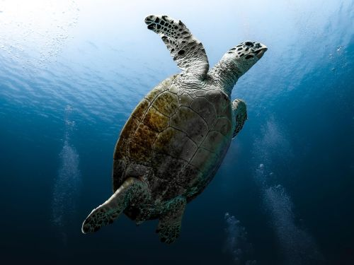

responsywna galeria
zdjęcia w dwóch rozmiarach (500px i 1000px) .jpg, ładowane w zależności od szerokości okna.

Grupa bocianów

Jeżyk jesienią

Słodkie pisklaki

Rudy lis w śniegu

Meduza z głębi oceanu

Sarny otoczone zielenią

Samotna sowa

polujące wydry

Stado zebr

Żółw centkowany